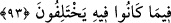

edince Musa (a.s.) -yukarıda geçtiği üzere- ona bedduâ etmiş, Allah Teâlâ da bu
bedduâyı kabul buyurmuştur. Duânın mutlaka tesir edeceği konusunda söze hâcet yoktur.
Anlatılır ki Allah Teâlâ, Muâviye’nin oğlu Yezid hakkındaki duâsını kabul
buyurmuştur. Şöyle ki: Muâviye Yezid’i veliahd tâyin ettiğinde kınanması üzerine bir
hitâbe irâd edip şöyle duâ etmiş: “Allah’ım, şayet Yezid’i kendisinde gördüğüm güzel
hasletlerden dolayı veliahd tâyin etmiş isem onu istediğim bu güzel hasletlere ulaştır ve
ona yardım et. Yok eğer onu veliahd tâyin etmeye beni, babanın çocuğuna karşı hissettiği
sevgi sevk etmiş ise ve Yezid getirdiğim bu mevkiye lâyık değilse istediğim hasletlere
ulaştırmadan onun canını al.” Nitekim böyle de olmuştur. Çünkü Yezid’in hükümdarlığı
uhdesine aldığı tarih, hicrî 60, öldüğü tarih ise hicrî 64 idi. İbn Hacer’in es-Savâık’ında
böyle geçmektedir.
Hâsılı gerek âfâk gerekse enfüs (dış ve iç dünya) âyet ve ibretlerle doludur. Gören bir
göze, duyan bir kulağa sâhip olanlar, bu muhtelif izleri görür, mütevatir haberleri duyar
ve ölüm gelip çatıncaya kadar ibret alıp durur. Sağlam ve güçlü olanın kahrının
eserlerinden sâlim olur. Devamlı işlediği günahlarla kendisi başkalarına ibret olmaz.
93. Andolsun ki biz, İsrâiloğulları’nı iyi bir yere yerleştirdik ve onlara güzel
rızıklar verdik. Ayrılığa düşmeleri kendilerine ilim geldikten sonra oldu. Şüphesiz
Rabb’in kıyamet günü anlaşmazlığa düştükleri şeyler hakkında aralarında hüküm
verecektir.
“Andolsun ki biz İsrâiloğulları’nı” düşmanları olan Fir’avn ve adamlarını helâk
edip kendilerini kurtardıktan sonra “iyi bir yere” hoşlarına gidecek münasip bir yere,
övgüye lâyık bir bölgeye “yerleştirdik” Bu yer Sûriye ve Mısır arazisidir.
Fir’avn’lardan ve Amalikalılar’dan sonra orasının mâlikleri oldular ve her tarafına
yerleştiler.
“ve onlara güzel rızıklar verdik.” lezzetli meyveler, bıldırcın, kudret helvası ve daha
başka rızıklar verdik. et-Tibyân’da böyle geçmektedir.
Dinî konularda “ayrılığa düşmeleri kendilerine ilim geldikten sonra oldu.” Yani
Tevrât’ı okuyup hükümlerini öğrendikten, din konusunda neyin hak olduğunu anladıktan
ve bu hal üzere sebât ve söz birliği etmeleri gereği ortaya çıktıktan sonra hâsıl olan
güven geldikten sonra oldu. Yâni onlar baş olma kaygısıyle bir çok dinî meselede
birbirlerine zulmederek gruplara ayrıldılar. Bu gruplaşma sonunda onları savaşa
götürdü. Nitekim aynı durum, bu ümmetin ulemâsı arasında da görülmektedir. Çünkü